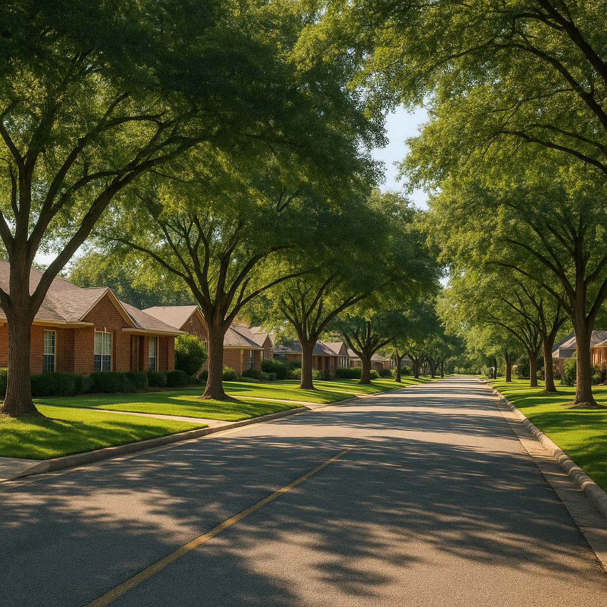

Every week I talk to Texas buyers who are stuck between two programs: USDA and FHA. Both offer low-down-payment paths to homeownership, and both are accessible to first-time buyers with modest credit scores. But they're not the same loan — and choosing the wrong one can cost you thousands over the life of your mortgage.
I'm Bond Peter Njoku, a licensed Mortgage Loan Officer (NMLS #2670329) based in Garland, Texas, and I close USDA and FHA loans across the DFW area every month. In this guide, I'll give you the honest 8-metric comparison you need, real payment math on a $250,000 home, and a clear framework for which loan wins in which situation.
What Is the Core Difference Between USDA and FHA?
Both are government-backed loans designed to help buyers with limited cash reserves or lower credit scores. The critical difference is this: USDA requires zero down payment but restricts where you can buy and how much you can earn. FHA requires 3.5% down but can be used anywhere in the country, with no income ceiling.
In DFW specifically, the USDA rural area map covers cities like Forney, Royse City, Terrell, and portions of Rockwall County — places where most homes are priced between $260,000 and $380,000. If your property is in an eligible area and your household income falls under the 2026 limit ($139,300 for 1–4 people in the Dallas metro), USDA is almost always the better financial deal. If either test fails, FHA steps in.
USDA vs FHA: 8-Metric Comparison Table
| Feature | USDA Guaranteed | FHA |
|---|---|---|
| Down payment | 0% (zero down) | 3.5% (with 580+ FICO) |
| Upfront fee | 1.0% guarantee fee (financed) | 1.75% UFMIP (financed) |
| Annual MIP / fee | 0.35% of loan balance | 0.55% of loan balance (life of loan if <10% down) |
| Minimum credit score | 640 (most lenders) | 580 (with 3.5% down) |
| Income limit (DFW) | $139,300 (1–4 people) / $183,900 (5–8) | None |
| Property eligibility | USDA-designated rural/suburban only | Any property, anywhere |
| 2026 loan limit (DFW) | No hard cap (income/DTI limits apply) | $563,500 DFW MSA |
| Streamline refinance | Yes (USDA Streamline-Assist) | Yes (FHA Streamline) |
How Much Will My Mortgage Payment Be? The 30-Year Cost Math
Let's run the actual numbers on a $250,000 purchase price in Forney or Royse City — a typical USDA-eligible area — at a 7.5% interest rate (the current 2026 rate environment).
FHA scenario:
- Down payment: 3.5% = $8,750 (out of pocket at closing)
- Base loan: $241,250
- FHA Upfront MIP (1.75%): $4,222 — rolled into loan → total loan = $245,472
- Monthly P&I at 7.5%: $1,716/mo
- Annual MIP (0.55%): $1,125/yr ÷ 12 = $110/mo (stays for life of loan)
- Total housing: ~$1,826/mo before taxes and insurance
- 30-year total payments: $1,826 × 360 = $657,360 + $8,750 down = $666,110 total cash out
USDA scenario:
- Down payment: $0
- Base loan: $250,000
- USDA Upfront Guarantee Fee (1.0%): $2,500 — rolled in → total loan = $252,500
- Monthly P&I at 7.5%: $1,765/mo
- Annual fee (0.35%): $884/yr ÷ 12 = $74/mo
- Total housing: ~$1,839/mo before taxes and insurance
- 30-year total payments: $1,839 × 360 = $662,040 + $0 down = $662,040 total cash out
The bottom line: USDA saves roughly $4,070 over 30 years compared to FHA — and it saves you the $8,750 down payment at closing. Even though the monthly USDA payment is about $13/mo higher due to the larger loan balance, the zero-down advantage more than makes up for it when you factor in total cash outlay.
What Are the USDA Income Limits for DFW Texas in 2026?
This is the number that trips up more buyers than anything else. The 2026 USDA guaranteed income limits for the Dallas HUD Metro FMR Area (which includes Kaufman, Rockwall, Ellis, Hunt, and surrounding counties) are:
- 1–4 person household: $139,300
- 5–8 person household: $183,900
These figures were verified directly from USDA's eligibility worksheet at eligibility.sc.egov.usda.gov (effective September 2026). I want to be clear about one common confusion: the $119,700 figure you may see online is a down payment assistance program income limit (TSAHC/TDHCA), not a USDA limit. Never mix those two numbers.
If your gross household income is close to $139,300, don't give up — I've helped buyers earning $150,000+ gross who still qualified for USDA after we documented childcare deductions ($9,600/yr for two kids in daycare), dependent deductions ($480 each), and disability-related expenses. Those deductions reduce your "adjusted annual income" — the number USDA actually compares against the limit.
Which USDA-Eligible Cities in DFW Can I Buy In?
In 2026, properties in the following DFW communities are eligible for USDA financing (verify each address at the USDA eligibility map before contracting):
- Forney (75126) — most addresses qualify
- Royse City (75189)
- Terrell (75160)
- Portions of Rockwall County — outer areas (confirm by address)
- Wills Point, Quinlan, Emory — farther out Hunt County
Garland, Mesquite, Dallas proper, Plano, Frisco, McKinney, and most other established DFW cities are not USDA-eligible — they're too densely populated. For those areas, FHA or conventional is the path forward.
What Happens When You're Over the USDA Income Limit?
If USDA is out because of income or location, FHA becomes your next best option — and it pairs well with down payment assistance programs. TSAHC Home Sweet Texas (3–5% grant) or TDHCA My First Texas Home (forgivable DPA) can reduce or eliminate your 3.5% FHA down payment. For a $250,000 purchase, a 5% TSAHC grant covers $12,500 — more than the required $8,750 FHA down, with $3,750 left over toward closing costs.
I helped a family in Mesquite earlier this year — household income of $152,000, two kids, $0 in savings. USDA was off the table on income. But FHA + TSAHC grant got them into a $285,000 home with less than $3,000 out of pocket at closing after the seller paid concessions. If you're in a similar situation, call me — there's usually a path even when it doesn't look obvious.
USDA vs FHA: Which One Should You Choose?
Use USDA if you answer YES to all three:
- The property you want is in a USDA-eligible area (Forney, Royse City, Terrell, or Rockwall outlying areas)
- Your adjusted household income falls under $139,300 (1–4 people) or $183,900 (5–8 people)
- Your credit score is 640 or higher (most USDA lenders require this minimum)
If you answer NO to any of those three, FHA is almost certainly the better fit — especially if you're in Garland, Mesquite, Dallas, or any established DFW city where USDA doesn't apply. FHA also has more flexibility at lower credit scores (580+) and no location restriction.
Frequently Asked Questions
What is the income limit for a USDA loan in Texas in 2026?
I'm Bond Peter Njoku (NMLS #2670329) and for most DFW-area buyers, the 2026 USDA guaranteed loan income limit is $139,300 for households of 1–4 people and $183,900 for households of 5–8. That applies to Kaufman, Rockwall, Ellis, and other counties in the Dallas HUD Metro FMR Area. If your gross income is above that, we can often use childcare deductions, disability deductions, or dependent deductions to bring your adjusted income under the limit. Call or text me at 469-545-7180 to run your numbers.
Can I use down payment assistance with a USDA loan in Texas?
I'm Bond Peter Njoku (NMLS #2670329) and no — USDA guaranteed loans already finance 100% of the purchase price with zero down payment required, so DPA programs like TSAHC or TDHCA don't stack with USDA the same way they do with FHA. However, if your adjusted income is above the USDA limit, I can often pair an FHA loan with DPA for a low or even zero-out-of-pocket purchase in eligible areas. Call or text me at 469-545-7180 to compare both paths for your situation.
Is it easier to qualify for USDA or FHA in Texas?
I'm Bond Peter Njoku (NMLS #2670329) and both programs are accessible, but they test different things. FHA is more forgiving on credit — I can often get buyers approved at 580 FICO with FHA. USDA prefers 640+ credit but has no income cap issue for buyers in rural-eligible areas who are under the income limit. The bigger filter for USDA is the property location: it must be in an eligible rural or suburban area (Forney, Royse City, Terrell, and parts of Rockwall qualify in 2026). Call or text me at 469-545-7180 and I'll tell you in minutes which one you qualify for.
What is the USDA vs FHA loan limit in Texas for 2026?
I'm Bond Peter Njoku (NMLS #2670329) and here's the key difference: FHA loans in the DFW area are capped at $563,500 for 2026. USDA guaranteed loans don't have a set purchase price cap — you qualify based on your income, debt-to-income ratio, and the property's appraised value, not a hard loan ceiling. In practice, most USDA buyers in Forney, Royse City, and Terrell are in the $250,000–$380,000 range, well inside USDA's reach. Call or text me at 469-545-7180 and I'll pull a full eligibility comparison for your specific home price.
Not Sure Which Loan Is Right for You? Let Me Run Both Scenarios.
I'm Bond Peter Njoku (NMLS #2670329). Whether you're eyeing Forney, Royse City, Garland, or Mesquite, I'll run a side-by-side USDA vs FHA comparison on your actual numbers — income, credit score, purchase price, and target city — in about 15 minutes. Call or text me at 469-545-7180, message me on WhatsApp, or start your pre-approval online.